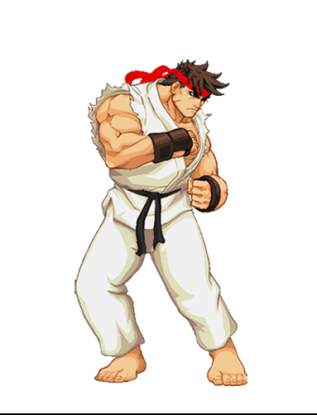
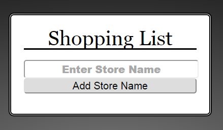
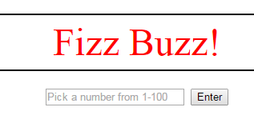
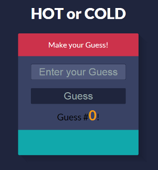
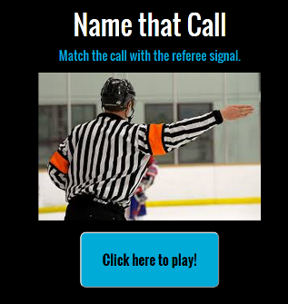
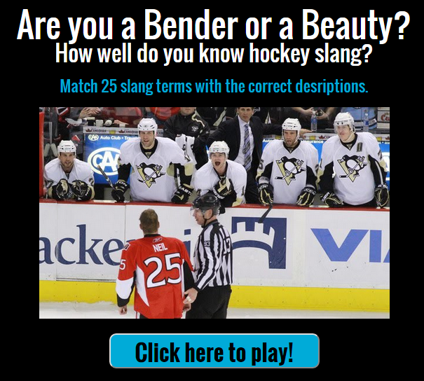
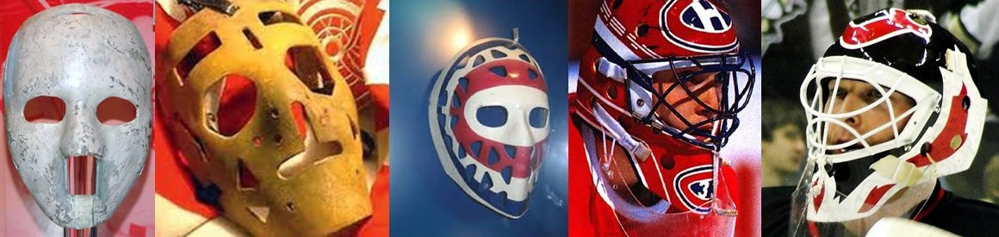

About

I am a Colorado native who recently made the career change to become a Front-End Web Developer. I graduated with a degree in political science and a minor in marketing and a Masters of Business Administration from the University of Colorado at Colorado Springs and spent some time working in educational and activist non-profits in Colorado, Washington, DC, and Atlanta, GA. I decided to make a career shift to expand my options and skill set by learning web development.
My skills with HTML, CSS, JQuery, and JavaScript are intermediate, but I am learning more everyday and am eager to expand my knowledge base. I am currently the Webmaster for my best friend's hockey news and lifestyle site, Buckets and Blades Hockey, where I manage and modify the WordPress framework and design interactive games.
When I am not coding or teaching I am playing hockey, hiking in the beautiful Colorado mountains, or binging on Netflix.
Résumé
Education
University of Colorado at Colorado Springs
- Masters of Business Administration – May 2014
- Bachelor of Arts in Political Science; Minor in Marketing – May 2009
- Magna cum laude with highest distinction
Thinkful
- Front-End Web Development – February 2015
- Intermediate competency in HTML, CSS, jQuery, JavaScript, and Ajax
Employment History
Buckets and Blades Hockey, LLC.
Colorado Springs, CO
September 2014 – Present
Webmaster and Game Master
Foundation for Economic Education
Atlanta, GA
May 2012 – April 2014
College Programs Manager
Free Minds Film Festival. LLC.
Colorado Springs, CO
February 2011 – Present
Executive Director
- 2011 attracted over 90 attendees
- 2012 attracted over 120 attendees
Awards
- Outstanding Undergraduate in Political Science in 2009
- UCCS Dean’s and President’s Lists
- Member of American Mensa
- Boy Scouts of America, promoted to Eagle Scout
- Sigma Alpha Lambda: Society of Success and Leadership
- Beta Gamma Sigma: International Business Honor Society
Projects
Thinkful - Front End Web Developer Course Projects
Streetfighter
A jQuery program which allows the user to put Ryu in a ready position, throw a Hoduken, and strike a pose.
Built from scratch using HTML, CSS, jQuery, and pre-made .gifs.
Shopping List
A jQuery program which allows the user to build a shopping list by naming the list, adding, and removing items.
Built from scratch using HTML, CSS, and jQuery
FizzBuzz
Enter any number between 1 and 100 and the program will list the numbers substituting "Fizz" for multiples of 3, "Buzz" for multiples of 5, and "Fizz-Buzz for multiples of 3 and 5.
Built using JavaScript and minimial HTML and CSS. This project was designed for functionality rather than asthetics.
Hot or Cold
This game generates a random number between 1 and 100. The player guesses the number using hints generated by the program until he or she guesses the correct number.
Built using JavaScript with a pre-made HTML and CSS platform.
JavaScript Games
Name that Call
In this game the player is told the name of a call made by a hockey referee and must match that call with one of 4 pictures below.
Built from scratch using JavaScript, HTML, and CSS.
Bender or Beauty
This game tests the players knowledge of hockey slang by asking them to match the term with the correct description.
Built from scratch using JavaScript, HTML, and CSS.
Stanley Cup Trivia
This game tests the players knowledge of Lord Stanley's Cup.
Built from scratch using JavaScript, HTML, and CSS.
Masked Men of Hockey/h4>
This game tests the players knowledge of iconic goalie masks by matching pictures of the masks with the people who wore them.
Built from scratch using JavaScript, HTML, and CSS.
Freelance Websites and Other Projects
Buckets and Blades Hockey
This website was built using a pre-made WordPress theme with customizations to the CSS stylesheets.